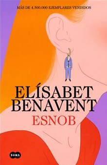
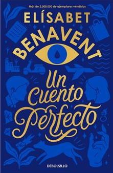
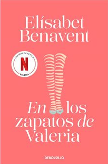

Bienvenidos a nuestro espacio dedicado a los apasionados de la lectura, donde cada libro recomendado
está cuidadosamente seleccionado para hacerte vibrar. Aquí encontrarás una cuidadosa selección de
novelas románticas que te emocionarán y thrillers que te mantendrán en suspense hasta la última
página. Si disfrutas de las historias intensas, los giros inesperados y los personajes inolvidables,
este es tu lugar ideal.
Explora autores fascinantes, descubre tramas que te envolverán desde el primer capítulo y sumérgete
en mundos donde el amor y el misterio se entrelazan. Además, para hacer tu experiencia aún más
sencilla, incluimos enlaces directos a las mejores tiendas para que puedas adquirir tus próximos
favoritos sin complicaciones. Déjate guiar por nuestras recomendaciones y prepárate para disfrutar
de una aventura literaria única. ¡Tu próxima gran lectura te espera!
Autores
Elisabet Benavent
Elísabet Benavent nacida en Gandía, Valencia, el 3 de julio de 1984. Es conocida como Beta Coqueta.
Escritora española de novelas de comedia romántica. Elísabet Benavent es licenciada en Comunicación
Audiovisual por la Universidad Cardenal Herrera CEU de Valencia. Tras esa licenciatura se mudó a
Madrid donde cursó el máster sobre Comunicación y Arte en la Universidad Complutense de Madrid,
lugar donde actualmente reside.
La autora de varias novelas en los que destaca la saga En los zapatos de Valeria. Entre todas sus
novelas ha vendido más de 5 millones de ejemplares y se posiciona como una de las escritoras más
vendidas de la literatura contemporánea española
Libros

Esnob
Fecha de lanzamiento: 4 de junio de 2024
Género: Novela romántica
Todas esas cosas que te diré mañana
Fecha de lanzamiento: 9 de marzo de 2023
Género: Novela romántica
El arte de engañar al Karma
Fecha de lanzamiento: 8 de abril de 2021
Género: Novela romántica

Un cuento perfecto
Fecha de lanzamiento: 18 de febrero de 2021
Género: Novela romántica
Adaptación a la pantalla: En octubre de 2022, Netflix comenzó a rodar una miniserie basada en
el superventas del mismo título. Protagonizada por Anna Castillo y Álvaro Mel, la miniserie se
estrenó el 28 de julio de 2023.

En los zapatos de Valeria
Fecha de lanzamiento: 17 de septiembre de 2015
Género: Novela romántica
Adaptación a la pantalla: En febrero de 2019, Netflix anunció la adaptación de la saga "En los
zapatos de Valeria" en forma de serie de televisión. Protagonizada por Diana Gómez, Paula Malia,
Silma López y Teresa Riott fue estrenada el 8 de mayo de 2020.
Premios
«Cosmopolitan Influencer Awards by Pandora» en 2019.
Premio Cosmopolitan a la escritora milenial en 2017.
Premio Traveler Condé Nast 2021 por Valeria
Redes sociales
Opiniones de lectores, criticas
Sobre valeria: Lectura rápida, sencilla, que te engancha desde la primera página, fan de Elisabet
Benavent, ya llevo siete libros suyos, y pienso comprarlos todos!!!!
Datos curiosos
Eligió el seudónimo porque combina "Beta", que alude al término "beta reader" (lectores iniciales de
una obra), y "Coqueta", como referencia a su estilo fresco y cercano. Es un nombre que refleja su
personalidad y su conexión con los lectores.
Muchas de sus historias y personajes están inspirados en situaciones reales o en personas cercanas a
ella. Valeria, la protagonista de su primera saga, tiene varios rasgos autobiográficos, como sus
inseguridades y su sentido del humor.
A menudo, sus historias no terminan con el típico "felices para siempre". Elisabet prefiere finales
realistas que reflejen las complejidades de la vida y el amor, aunque sigan siendo esperanzadores.
Carmen Mola
Carmen Mola es el seudónimo con el que los escritores españoles Jorge Díaz, Agustín Martínez y
Antonio Mercero publicaron la saga de novelas iniciada con La novia gitana en la editorial Alfaguara
a partir de 2018, con el personaje de la inspectora Elena Blanco como protagonista. La
identidadverdadera de estos autores se conoció en octubre de 2021, cuando ganaron el Premio Planeta
con su nueva novela La Bestia.
Libros
Las madres
Fecha de lanzamiento: 31 de agosto de 2023
Género: Novela negra y policiaca
La novia gitana
Fecha de lanzamiento: 17 de mayo de 2018
Género: Novela negra y policiaca
La red púrpura
Fecha de lanzamiento: 29 de agosto de 2024
Género: Novela negra y policiaca
Premios
Premio Planeta 2021:Lo obtuvieron por la novela La Bestia. Este es uno de los premios literarios más
prestigiosos en lengua española y está dotado con un millón de euros para el ganador. La obra es un
thriller ambientado en el Madrid del siglo XIX, en plena epidemia de cólera.
Redes sociales
Opiniones de lectores, criticas
Sobre la red purpura: ¿Quién es Carmen Mola? ¿Acaso importa? Sus novelas atrapan con una originalidad
que nos somete y nos hace desear más, mucho más, cuando, horrorizados, nos damos cuenta de que
estamos ya en la última página.
Sobre la red purpura:La novela negra o muta o se ensimisma. Carmen Mola, la escritora mutante. Lo
peor de ela, que no la puedes invitar a un festivale
¿La Elena Ferrante española? Carmen Mola irrumpe con fuerza en el panorama de la novela negra con 'La
novia gitana', pero nadie sabe quién está detrás del seudónimo
Datos curiosos
Carmen Mola fue presentada inicialmente como una autora misteriosa que escribía bajo seudónimo,
incluso describiendo a "ella" como una profesora universitaria madrileña. En 2021, al ganar el
Premio Planeta, se reveló que detrás del nombre están Jorge Díaz, Agustín Martínez y Antonio
Mercero, tres guionistas y escritores experimentados. La revelación causó polémica, ya que Carmen
Mola había sido promovida como una autora femenina en un género dominado mayoritariamente por
hombres.
Según los autores, eligieron este nombre porque sonaba "español y normal". "Carmen" es uno de los
nombres más comunes en España, y "Mola" es una palabra coloquial que significa "guay" o "chulo".
Muchas de sus tramas exploran temas oscuros de la sociedad, como el tráfico de personas, el machismo
y la violencia, lo que aporta una dimensión social a sus historias.